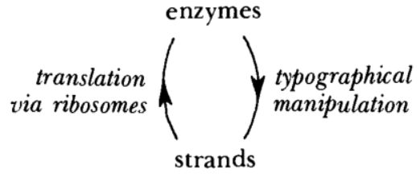
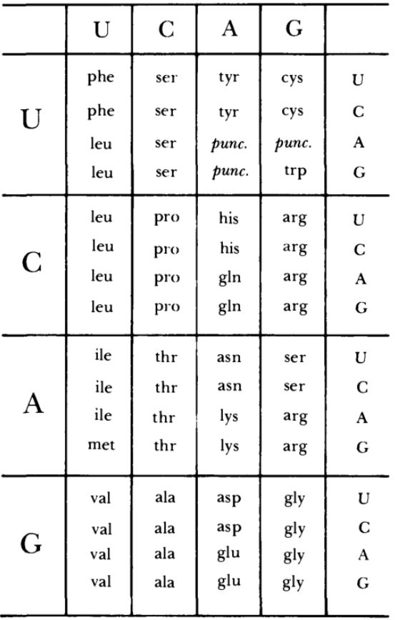

Typogenetics
There are no cards for this section.
Strands, Bases, Enzymes
What are the letters G, C, T, A called?
bases
note: "nucleotides" is incorrect here, as that also include the extra parts (the deoxyribose and phosphate group)
source: Douglas Hofstadter. Gödel, Escher, Bach: an Eternal Golden Braid (GEB). Chapter XVI: Self-Ref and Self-Rep. p. 505.
Typogenetics: name for the mobile machines that operate on strands
enzymes
source: Douglas Hofstadter. Gödel, Escher, Bach: an Eternal Golden Braid (GEB). Chapter XVI: Self-Ref and Self-Rep. p. 505.
Typogenetics: Every [...] is made up of a sequence of [...]. (nucleotide space)
strand, bases
note: "nucleotide" is not a correct answer here, because in Typogenetics there are no nucleotides, only bases.
source: Douglas Hofstadter. Gödel, Escher, Bach: an Eternal Golden Braid (GEB). Chapter XVI: Self-Ref and Self-Rep. p. 505.
In Typogenetics, the thing that takes the strand and operates on it
enzyme
source: Douglas Hofstadter. Gödel, Escher, Bach: an Eternal Golden Braid (GEB). Chapter XVI: Self-Ref and Self-Rep. p. 505.
Copy Mode and Double Strands
What's the tricky thing/twist about copying a strand?
you always copy the complementary strand, rather than literally copying the strand
source: Douglas Hofstadter. Gödel, Escher, Bach: an Eternal Golden Braid (GEB). Chapter XVI: Self-Ref and Self-Rep. p. 506.
Amino Acids 1
Typogenetics: what are amino acids?
they are commands like "cut strand", "delete a base", "turn on Copy mode", "insert A", etc.
source: Douglas Hofstadter. Gödel, Escher, Bach: an Eternal Golden Braid (GEB). Chapter XVI: Self-Ref and Self-Rep. p. 508.
Typogenetics: Every [...] is made up of a sequence of [...]. (protein space)
enzyme, amino acids
note: "protein" is not a correct answer here because in Typogenetics, there are no proteins, only enzymes
source: Douglas Hofstadter. Gödel, Escher, Bach: an Eternal Golden Braid (GEB). Chapter XVI: Self-Ref and Self-Rep. p. 508.
Translation and the Typogenetic Code
Typogenetics vs formal system: permanence of strands/theorems
in Typogenetics, after a strand is acted on by an enzyme, its original form is gone, whereas in a formal system, using a rule of inference with some theorem to produce new theorems doesn't destroy the old theorem
source: Douglas Hofstadter. Gödel, Escher, Bach: an Eternal Golden Braid (GEB). Chapter XVI: Self-Ref and Self-Rep. p. 509.
Typogenetics vs formal system: the arbitrary strand you begin with is like [...] in a formal system.
an axiom
note: axiom here is used to mean "original thing that everything else comes from", not in the sense of "immutable truth"
source: Douglas Hofstadter. Gödel, Escher, Bach: an Eternal Golden Braid (GEB). Chapter XVI: Self-Ref and Self-Rep. p. 509.
Typogenetics vs formal system: enzymes are like what in a formal system?
rules of inference
source: Douglas Hofstadter. Gödel, Escher, Bach: an Eternal Golden Braid (GEB). Chapter XVI: Self-Ref and Self-Rep. p. 509.
Typogenetics: what determines how strands define enzymes?
the Typogenetic Code
source: Douglas Hofstadter. Gödel, Escher, Bach: an Eternal Golden Braid (GEB). Chapter XVI: Self-Ref and Self-Rep. p. 509.
Tertiary Structure of Enzymes
There are no cards for this section.
Punctuation, Genes, and Ribosomes
Typogenetics: How is a gene defined?
that portion of a strand which codes for a single enzyme (i.e., which has no punctuation duplet AA)
source: Douglas Hofstadter. Gödel, Escher, Bach: an Eternal Golden Braid (GEB). Chapter XVI: Self-Ref and Self-Rep. p. 512.
Typogenetics: what's the mechanism which reads strands and produces the enzymes which are coded inside the strands?
ribosome (which is basically the human playing the "game" of Typogenetics)
source: Douglas Hofstadter. Gödel, Escher, Bach: an Eternal Golden Braid (GEB). Chapter XVI: Self-Ref and Self-Rep. p. 512.
In Typogenetics, the thing that takes the strand and converts it to an enzyme
ribosome
source: Douglas Hofstadter. Gödel, Escher, Bach: an Eternal Golden Braid (GEB). Chapter XVI: Self-Ref and Self-Rep. p. 512.
Puzzle: A Typogenetical Self-Rep
There are no cards for this section.
The Central Dogma of Typogenetics
Typogenetics: In what sense do strands play the role of data?
strands are acted upon by enzymes
source: Douglas Hofstadter. Gödel, Escher, Bach: an Eternal Golden Braid (GEB). Chapter XVI: Self-Ref and Self-Rep. p. 513.
Typogenetics: In what sense do strands play the role of programs?
strands encode the actions which are to be performed on the data
source: Douglas Hofstadter. Gödel, Escher, Bach: an Eternal Golden Braid (GEB). Chapter XVI: Self-Ref and Self-Rep. p. 513.
Which arrow is the role of the interpreter/compiler?

left (takes strands-as-programs and turns them into "machine code"/instructions to be performed)
source: Douglas Hofstadter. Gödel, Escher, Bach: an Eternal Golden Braid (GEB). Chapter XVI: Self-Ref and Self-Rep. p. 513.
Which arrow is the role of the processor?
right (takes "machine code"/instructions to be performed and then actually executes those instructions using the strands-as-data)
source: Douglas Hofstadter. Gödel, Escher, Bach: an Eternal Golden Braid (GEB). Chapter XVI: Self-Ref and Self-Rep. p. 513.
In this diagram, the bottom pointing arrow represents [...], and the top pointing arrow represents [...]. (Substitute: information-copy, information-creation)
information-creation, information-copy
source: Douglas Hofstadter. Gödel, Escher, Bach: an Eternal Golden Braid (GEB). Chapter XVI: Self-Ref and Self-Rep. p. 513.
Strange Loops, TNT, and Real Genetics
There are no cards for this section.
DNA and Nucleotides
What's the difference between "nucleotide" and "base"?
"nucleotide" includes the extra parts of each "bead" (namely a sugar called deoxyribose and a phosphate group), whereas "base" refers only to the A,C,G,T part of the nucelotide
source: Douglas Hofstadter. Gödel, Escher, Bach: an Eternal Golden Braid (GEB). Chapter XVI: Self-Ref and Self-Rep. p. 514.
Which bonds are stronger, the bonds connecting nucleotides along a single strand, or the bonds connecting two strands?
the bonds connecting nucleotides along a single strand
source: Douglas Hofstadter. Gödel, Escher, Bach: an Eternal Golden Braid (GEB). Chapter XVI: Self-Ref and Self-Rep. pp. 514–516.
Which bonds are weaker, the bonds connecting nucleotides along a single strand, or the bonds connecting two strands?
the bonds connecting two strands
source: Douglas Hofstadter. Gödel, Escher, Bach: an Eternal Golden Braid (GEB). Chapter XVI: Self-Ref and Self-Rep. pp. 514–516.
Bonds between nucleotides on the same strand are stronger [...] whereas bonds between complementary (pyrimidine–purine) nucleotides are weaker [...]. (Substitute: hydrogen bonds, covalent bonds)
covalent bonds, hydrogen bonds
source: Douglas Hofstadter. Gödel, Escher, Bach: an Eternal Golden Braid (GEB). Chapter XVI: Self-Ref and Self-Rep. pp. 514, 516.
Messenger RNA and Ribosomes
If the DNA is stored in the nucleus of the cell, and enzymes are manufactured (using info in the DNA) by ribosomes in the cytoplasm of the cell, how does the information about the enzyme structure get from the nucleus to the ribosomes?
via messenger RNA
source: Douglas Hofstadter. Gödel, Escher, Bach: an Eternal Golden Braid (GEB). Chapter XVI: Self-Ref and Self-Rep. p. 517.
What shape does mRNA tend to have?
long, somewhat randomly curving strands
source: Douglas Hofstadter. Gödel, Escher, Bach: an Eternal Golden Braid (GEB). Chapter XVI: Self-Ref and Self-Rep. p. 517.
What's the thing that takes mRNA and spits out a protein?
ribosome
source: Douglas Hofstadter. Gödel, Escher, Bach: an Eternal Golden Braid (GEB). Chapter XVI: Self-Ref and Self-Rep. p. 517.
Name of the process to go from DNA to mRNA
transcription
source: Douglas Hofstadter. Gödel, Escher, Bach: an Eternal Golden Braid (GEB). Chapter XVI: Self-Ref and Self-Rep. p. 517.
Where in the cell does transcription take place?
the nucleus
source: Douglas Hofstadter. Gödel, Escher, Bach: an Eternal Golden Braid (GEB). Chapter XVI: Self-Ref and Self-Rep. p. 517.
What is transcription?
The process by which DNA gets copied to mRNA
source: Douglas Hofstadter. Gödel, Escher, Bach: an Eternal Golden Braid (GEB). Chapter XVI: Self-Ref and Self-Rep. p. 517.
Amino Acids 2
What are the building blocks for enzymes/proteins?
amino acids
source: Douglas Hofstadter. Gödel, Escher, Bach: an Eternal Golden Braid (GEB). Chapter XVI: Self-Ref and Self-Rep. pp. 504–532.
Size comparison: DNA vs mRNA
DNA is much longer
note: The book actually compares the lengths of proteins to the length of DNA. But since the length of a strand of mRNA is just 3 times the length of the corresponding protein, the comparison still holds (3 times "about three hundred" is about 900; DNA is still "hundreds of thousands or millions").
source: Douglas Hofstadter. Gödel, Escher, Bach: an Eternal Golden Braid (GEB). Chapter XVI: Self-Ref and Self-Rep. p. 518.
Ribosomes and Tape Recorders
Name of the process to go from mRNA to protein
translation
source: Douglas Hofstadter. Gödel, Escher, Bach: an Eternal Golden Braid (GEB). Chapter XVI: Self-Ref and Self-Rep. pp. 518–519.
Where in the cell does translation take place?
the cytoplasm
source: Douglas Hofstadter. Gödel, Escher, Bach: an Eternal Golden Braid (GEB). Chapter XVI: Self-Ref and Self-Rep. p. 518.
What is translation?
The process by which a ribosome uses mRNA to produce an enzyme/protein/sequence of amino acids
source: Douglas Hofstadter. Gödel, Escher, Bach: an Eternal Golden Braid (GEB). Chapter XVI: Self-Ref and Self-Rep. p. 518.
What's the thing that takes mRNA and translates it to amino acids?
ribosome (with the help of tRNA)
source: Douglas Hofstadter. Gödel, Escher, Bach: an Eternal Golden Braid (GEB). Chapter XVI: Self-Ref and Self-Rep. p. 519.
The Genetic Code
Why does it make sense that the Genetic Code has uracil rather than thymine?
because translation happens using mRNA, not DNA
note: This is not explicitly stated in the text.
source: Douglas Hofstadter. Gödel, Escher, Bach: an Eternal Golden Braid (GEB). Chapter XVI: Self-Ref and Self-Rep. p. 520.
Name of the table that encodes the mapping from codons to amino acids
the Genetic Code
source: Douglas Hofstadter. Gödel, Escher, Bach: an Eternal Golden Braid (GEB). Chapter XVI: Self-Ref and Self-Rep. p. 519.
What's the Genetic Code?
it's a mapping from triplets of nucleotides/bases (i.e., codons) to amino acids
source: Douglas Hofstadter. Gödel, Escher, Bach: an Eternal Golden Braid (GEB). Chapter XVI: Self-Ref and Self-Rep. p. 519.
Name for three bases/nucleotides
codon
source: Douglas Hofstadter. Gödel, Escher, Bach: an Eternal Golden Braid (GEB). Chapter XVI: Self-Ref and Self-Rep. p. 519.
What's the name for this table?

the Genetic Code
source: Douglas Hofstadter. Gödel, Escher, Bach: an Eternal Golden Braid (GEB). Chapter XVI: Self-Ref and Self-Rep. pp. 519–520.
Does the Genetic Code have a U or T?
U
note: remember, translation happens in RNA-world, not DNA-world!
source: Douglas Hofstadter. Gödel, Escher, Bach: an Eternal Golden Braid (GEB). Chapter XVI: Self-Ref and Self-Rep. p. 520.
Tertiary Structure
Proteins: what's the primary structure?
the sequence of amino acids
source: Douglas Hofstadter. Gödel, Escher, Bach: an Eternal Golden Braid (GEB). Chapter XVI: Self-Ref and Self-Rep. p. 519.
Proteins: Which kind of structure is the sequence of amino acids?
primary structure
source: Douglas Hofstadter. Gödel, Escher, Bach: an Eternal Golden Braid (GEB). Chapter XVI: Self-Ref and Self-Rep. p. 519.
Proteins: what's the tertiary structure?
the complicated and hard-to-predict folding structure
source: Douglas Hofstadter. Gödel, Escher, Bach: an Eternal Golden Braid (GEB). Chapter XVI: Self-Ref and Self-Rep. p. 519.
Proteins: Which kind of structure is the complicated and hard-to-predict folding structure, i.e., the way in which the protein likes to fold up?
tertiary structure
source: Douglas Hofstadter. Gödel, Escher, Bach: an Eternal Golden Braid (GEB). Chapter XVI: Self-Ref and Self-Rep. p. 519.
Difference between real genetics and Typogenetics: deriving the tertiary structure from the primary structure
In Typogenetics, a simple table gives the rules for which direction to "fold" the enzyme in, whereas in real genetics, there is no such simple rule to derive the tertiary structure
source: Douglas Hofstadter. Gödel, Escher, Bach: an Eternal Golden Braid (GEB). Chapter XVI: Self-Ref and Self-Rep. p. 519.
What determines the tertiary structure of a protein?
It is implicit in and completely determined by the primary structure: the sequence of amino acids
note: In other words, once mRNA is translated by
any ribosome into protein, it will always have the
same tertiary structure. It's not as if two different ribosomes will somehow "fold up" the protein into different shapes. The folding just happens on its own, completely determined by the order in which the amino acids appear in the protein.
However, there are also things called molecular chaperones
https://en.wikipedia.org/wiki/Chaperone_(protein) and the Wikipedia page there mentions that proteins can be "misfolded", so probably reality is more complicated than this basic picture. See also
https://en.wikipedia.org/wiki/Denaturation_(biochemistry)source: Douglas Hofstadter.
Gödel, Escher, Bach: an Eternal Golden Braid (GEB). Chapter XVI: Self-Ref and Self-Rep. p. 519.
Reductionistic Explanation of Protein Function
Difference between real genetics and Typogenetics: context-free function of amino acids
In Typogenetics, each amino acid of an enzyme is responsible for a single action, but in real genetics it is the tertiary structure of the enzyme as a whole which determines the function of the enzyme, so one cannot just look at a single amino acid in isolation in a context-free way to determine its function
source: Douglas Hofstadter. Gödel, Escher, Bach: an Eternal Golden Braid (GEB). Chapter XVI: Self-Ref and Self-Rep. p. 520.
In what sense can the function of an enzyme be described in a context-free way?
by going down to the level of physics (electrons and protons), rather than the level of individual amino acids
source: Douglas Hofstadter. Gödel, Escher, Bach: an Eternal Golden Braid (GEB). Chapter XVI: Self-Ref and Self-Rep. p. 522.
Transfer RNA and Ribosomes
What are peptide bonds?
the (covalent) bonds that hold together two amino acids
source: Douglas Hofstadter. Gödel, Escher, Bach: an Eternal Golden Braid (GEB). Chapter XVI: Self-Ref and Self-Rep. p. 523.
What type of chemical bond is a peptide bond?
covalent bond
source: Douglas Hofstadter. Gödel, Escher, Bach: an Eternal Golden Braid (GEB). Chapter XVI: Self-Ref and Self-Rep. p. 523.
How do you remember what tRNA looks like?
it's shaped like a t
source: Douglas Hofstadter. Gödel, Escher, Bach: an Eternal Golden Braid (GEB). Chapter XVI: Self-Ref and Self-Rep. p. 522.
The name of the molecules that look like a four-leaf clover
tRNA
source: Douglas Hofstadter. Gödel, Escher, Bach: an Eternal Golden Braid (GEB). Chapter XVI: Self-Ref and Self-Rep. p. 524.
Does the ribosome "know" the genetic code?
No
source: Douglas Hofstadter. Gödel, Escher, Bach: an Eternal Golden Braid (GEB). Chapter XVI: Self-Ref and Self-Rep. p. 522.
Another name for protein
polypeptide
note: apparently, technically, "protein" is reserved for polypeptides that are long enough
source: Douglas Hofstadter. Gödel, Escher, Bach: an Eternal Golden Braid (GEB). Chapter XVI: Self-Ref and Self-Rep. p. 523.
Another name for polypeptide
protein
note: apparently, technically, "protein" is reserved for polypeptides that are long enough
source: Douglas Hofstadter. Gödel, Escher, Bach: an Eternal Golden Braid (GEB). Chapter XVI: Self-Ref and Self-Rep. p. 523.
Size comparison: mRNA vs tRNA
tRNA is much smaller
source: Douglas Hofstadter. Gödel, Escher, Bach: an Eternal Golden Braid (GEB). Chapter XVI: Self-Ref and Self-Rep. p. 524.
What is surprising about the structure of tRNA?
Despite being nucleotide-based (rather than amino-acid-based), they have fixed, well-defined tertiary structure just like proteins (and unlike DNA/mRNA)
source: Douglas Hofstadter. Gödel, Escher, Bach: an Eternal Golden Braid (GEB). Chapter XVI: Self-Ref and Self-Rep. p. 524.
Hofstadter's "vivid image" for tRNA
as flashcards floating around the ribosome
source: Douglas Hofstadter. Gödel, Escher, Bach: an Eternal Golden Braid (GEB). Chapter XVI: Self-Ref and Self-Rep. p. 524.
What does tRNA stand for?
transfer RNA
source: Douglas Hofstadter. Gödel, Escher, Bach: an Eternal Golden Braid (GEB). Chapter XVI: Self-Ref and Self-Rep. p. 524.
Punctuation and the Reading Frame
There are no cards for this section.
Recap
There are no cards for this section.
Levels of Structure and Meaning in Proteins and Music
Proteins: what's the secondary structure?
any sort of repetitive spiraling or bunching that the protein does, e.g. the alpha helix
source: Douglas Hofstadter. Gödel, Escher, Bach: an Eternal Golden Braid (GEB). Chapter XVI: Self-Ref and Self-Rep. p. 525.
Proteins: what's the quaternary structure?
sometimes, the protein will fold into multiple giant blobs (and these blobs are usually held together by hydrogen bonds), and the quaternary structure is the arrangement of such blobs
source: Douglas Hofstadter. Gödel, Escher, Bach: an Eternal Golden Braid (GEB). Chapter XVI: Self-Ref and Self-Rep. p. 525.
Give an example of a secondary structure
(e.g., α-helix, β-sheet)
note: β-sheet is not mentioned in GEB but it's frequently mentioned in other sources.
source: Douglas Hofstadter. Gödel, Escher, Bach: an Eternal Golden Braid (GEB). Chapter XVI: Self-Ref and Self-Rep. p. 525.
Polyribosomes and Two-Tiered Canons
What's the thing that takes a DNA and transcribes it to mRNA?
RNA polymerase
source: Douglas Hofstadter. Gödel, Escher, Bach: an Eternal Golden Braid (GEB). Chapter XVI: Self-Ref and Self-Rep. p. 527.
Name of the enzyme that copies DNA to mRNA
RNA polymerase
source: Douglas Hofstadter. Gödel, Escher, Bach: an Eternal Golden Braid (GEB). Chapter XVI: Self-Ref and Self-Rep. p. 527.
What's RNA polymerase?
the enzyme that copies DNA to mRNA
source: Douglas Hofstadter. Gödel, Escher, Bach: an Eternal Golden Braid (GEB). Chapter XVI: Self-Ref and Self-Rep. p. 527.
What are polyribosomes?
It's where many ribosomes are all in a line, each producing one instance of the same protein using the same strand of mRNA (with a delay, of course)
source: Douglas Hofstadter. Gödel, Escher, Bach: an Eternal Golden Braid (GEB). Chapter XVI: Self-Ref and Self-Rep. p. 527.
Name for the phenomenon where several ribosomes are translating using the same mRNA at the same time (with delay)
polyribosome
source: Douglas Hofstadter. Gödel, Escher, Bach: an Eternal Golden Braid (GEB). Chapter XVI: Self-Ref and Self-Rep. p. 527.
Which Came First – The Ribosome or the Protein?
What's rRNA?
a type of RNA that ribosomes are made out of
source: Douglas Hofstadter. Gödel, Escher, Bach: an Eternal Golden Braid (GEB). Chapter XVI: Self-Ref and Self-Rep. p. 528.
What are ribosomes made out of?
proteins and rRNA (ribosomal RNA)
source: Douglas Hofstadter. Gödel, Escher, Bach: an Eternal Golden Braid (GEB). Chapter XVI: Self-Ref and Self-Rep. p. 528.
Protein Function
[...] are the universal mechanisms for getting things done in the cell
enzymes
source: Douglas Hofstadter. Gödel, Escher, Bach: an Eternal Golden Braid (GEB). Chapter XVI: Self-Ref and Self-Rep. p. 529.
Name for the thing an enzyme acts on
substrate
source: Douglas Hofstadter. Gödel, Escher, Bach: an Eternal Golden Braid (GEB). Chapter XVI: Self-Ref and Self-Rep. p. 529.
What's one way to render an enzyme inactive, as mentioned in GEB?
clog up the active site of the enzyme with some "decoy" molecule
note: this is similar to what a receptor antagonist does to a cell
source: Douglas Hofstadter. Gödel, Escher, Bach: an Eternal Golden Braid (GEB). Chapter XVI: Self-Ref and Self-Rep. p. 529.
Typo-enzymes vs real enzymes: number of tasks
most real enzymes perform only a single task, rather than a sequence of tasks the way Typo-enzymes do
source: Douglas Hofstadter. Gödel, Escher, Bach: an Eternal Golden Braid (GEB). Chapter XVI: Self-Ref and Self-Rep. p. 529.
Typo-enzymes vs real enzymes: what they act on
Typo-enzymes only act on strands, whereas bio-enzymes act on pretty much everything (DNA, RNA, other proteins, ribosomes, cell membranes)
source: Douglas Hofstadter. Gödel, Escher, Bach: an Eternal Golden Braid (GEB). Chapter XVI: Self-Ref and Self-Rep. p. 529.
enzymes are the [...] for getting things done in the cell
universal mechanisms
source: Douglas Hofstadter. Gödel, Escher, Bach: an Eternal Golden Braid (GEB). Chapter XVI: Self-Ref and Self-Rep. p. 529.
Need for a Sufficiently Strong Support System
There are no cards for this section.
How DNA Self-Replicates
What's DNA polymerase?
the enzyme that copies a strand of DNA to make identical DNA
note: DNA polymerase does not act all by itself; there are two more "helper" enzymes that also play a role.
source: Douglas Hofstadter. Gödel, Escher, Bach: an Eternal Golden Braid (GEB). Chapter XVI: Self-Ref and Self-Rep. p. 530.
Comparison of DNA’s Self-Rep Method with Quining
In which way is DNA like a quine sentence?
the same strand (words) can be interpreted both as data (words-being-mentioned) and program (words-being-used)
source: Douglas Hofstadter. Gödel, Escher, Bach: an Eternal Golden Braid (GEB). Chapter XVI: Self-Ref and Self-Rep. p. 531.
In which way is DNA like a quine program?
When interpreted, it yields a copy of itself
note: This comparison is not explicitly made in the text.
source: Douglas Hofstadter. Gödel, Escher, Bach: an Eternal Golden Braid (GEB). Chapter XVI: Self-Ref and Self-Rep. p. 531.
Levels of Meaning of DNA
There are no cards for this section.